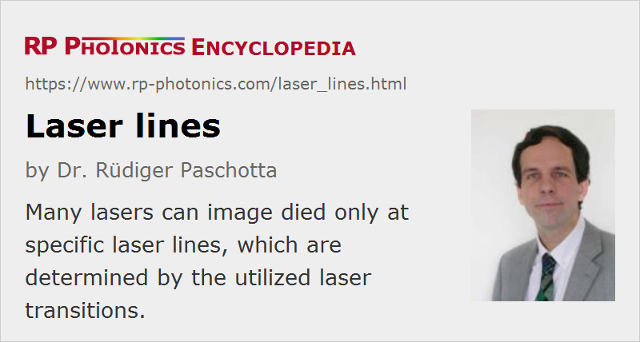

Laser Lines
Definition: narrow spectral lines obtained from lasers
More general term: spectral lines
German: Laserlinien
How to cite the article; suggest additional literature
Author: Dr. Rüdiger Paschotta
Many lasers can produce light only at certain optical wavelengths, or more precisely within quite narrow wavelength regions (spectral lines). Those are determined by the utilized laser transitions of the laser gain medium, which often have a narrow bandwidth of e.g. below 1 nm. The optical spectrum of such a laser source is necessarily a “line”, i.e., it exhibits a significant power spectral density only within a very narrow wavelength region.
The linewidth (optical bandwidth) of the laser light is sometimes similar to the bandwidth of the used laser transition, but in many cases it is even smaller by orders of magnitude. In particular, single-frequency lasers usually have a very narrow emission linewidth, often in the region of some kilohertz, in extreme cases even well below 1 Hz. See the article on narrow-linewidth lasers for more details.
Various kinds of optical components have been developed for use with specific laser lines. This has led to the term laser line optics, or more specifically to terms like laser line mirrors, laser line polarizers, etc.
Suppression of Unwanted Laser Lines
Many laser gain media have multiple laser lines. In most cases, lasing occurs only on one of those: the one which first reaches the laser threshold. Which line is selected depends not only on the laser gain at that wavelength, but also on the resonator losses. One can often obtain lasing at “weaker” lines when suppressing laser action at other lines, e.g. by using at least one resonator mirror which has a low reflectivity (high transmissivity) at the unwanted wavelengths.
For example, Nd:YAG lasers would usually operate at 1064 nm, the by far strongest line, but lasing is also possible at 946 nm, 1123 nm and 1338 nm, for example.
Wavelengths of Common Laser Lines
The following table, sorted by wavelength, contains common lines mostly from solid-state lasers and gas lasers. Also, some frequently used wavelengths from sources with frequency doubling, frequency tripling or frequency quadrupling are listed.
Various lasers with broadband gain media (e.g. Ti:sapphire) are not listed, because they are not limited to certain laser lines.
| Wavelength | Laser type or gain medium |
|---|---|
| 116 nm | hydrogen |
| 123 nm | hydrogen |
| 157 nm | F2 (fluorine) |
| 160 nm | hydrogen |
| 193 nm | ArF (argon fluoride) |
| 248 nm | KrF (krypton fluoride) |
| 257 nm | Yb:YAG, frequency-quadrupled |
| 266 nm | Nd:YAG or Nd:YVO4, frequency-quadrupled |
| 282 nm | XeBr (xenon bromide) |
| 308 nm | XeCl (xenon chloride) |
| 325 nm | He–Cd (helium–cadmium) |
| 337.1 nm | N2 (nitrogen) |
| 343 nm | Yb:YAG, frequency-tripled |
| 351 nm | XeF (xenon fluoride) |
| 351 nm | argon ion |
| 355 nm | Nd:YAG or Nd:YVO4, frequency-tripled |
| 457.9 nm | argon ion |
| 480 nm | Tm (thulium) (upconversion) |
| 488.0 nm | argon ion |
| 510.6 nm | copper vapor |
| 514.5 nm | argon ion |
| 515 nm | Yb:YAG, frequency-doubled |
| 532 nm | Nd:YAG or Nd:YVO4, frequency-doubled |
| 543.5 nm | helium–neon |
| 578.2 nm | copper vapor |
| 594.1 nm | helium–neon |
| 611.8 nm | helium–neon |
| 632.8 nm | helium–neon |
| 647.1 nm | krypton ion |
| 694.3 nm | ruby |
| 914 nm | Nd:YVO4 |
| 1030 nm | Yb:YAG |
| 1047 nm | Nd:YLF |
| 1050 nm | Yb:YAG |
| 1053 nm | Nd:YLF |
| 1064 nm | Nd:YAG, Nd:YVO4 |
| 1123 nm | Nd:YAG |
| 1152 nm | helium–neon |
| 1319 nm | Nd:YAG |
| 1338 nm | Nd:YAG |
| 1342 nm | Nd:YVO4 |
| 1415 nm | Nd:YAG |
| 1444 nm | Nd:YAG |
| 1.15 μm | helium–neon |
| 1.52 μm | helium–neon |
| 1617 nm | Er:YAG |
| 1645 nm | Er:YAG |
| 2.0 μm | Tm:YAG |
| 2.1 μm | Ho:YAG |
| 2.94 μm | Er:YAG |
| 3.39 μm | helium–neon |
| 4.8 μm | CO (carbon monoxide) |
| 5.5 μm | CO (carbon monoxide) |
| 8.3 μm | CO (carbon monoxide) |
| 9.4 μm | CO2 (carbon dioxide) |
| 10.6 μm | CO2 (carbon dioxide) |
Questions and Comments from Users
Here you can submit questions and comments. As far as they get accepted by the author, they will appear above this paragraph together with the author’s answer. The author will decide on acceptance based on certain criteria. Essentially, the issue must be of sufficiently broad interest.
Please do not enter personal data here; we would otherwise delete it soon. (See also our privacy declaration.) If you wish to receive personal feedback or consultancy from the author, please contact him e.g. via e-mail.
By submitting the information, you give your consent to the potential publication of your inputs on our website according to our rules. (If you later retract your consent, we will delete those inputs.) As your inputs are first reviewed by the author, they may be published with some delay.
See also: optical spectrum, spectral lines, wavelength, linewidth, laser line optics
and other articles in the category lasers
|  |
If you like this page, please share the link with your friends and colleagues, e.g. via social media:
These sharing buttons are implemented in a privacy-friendly way!